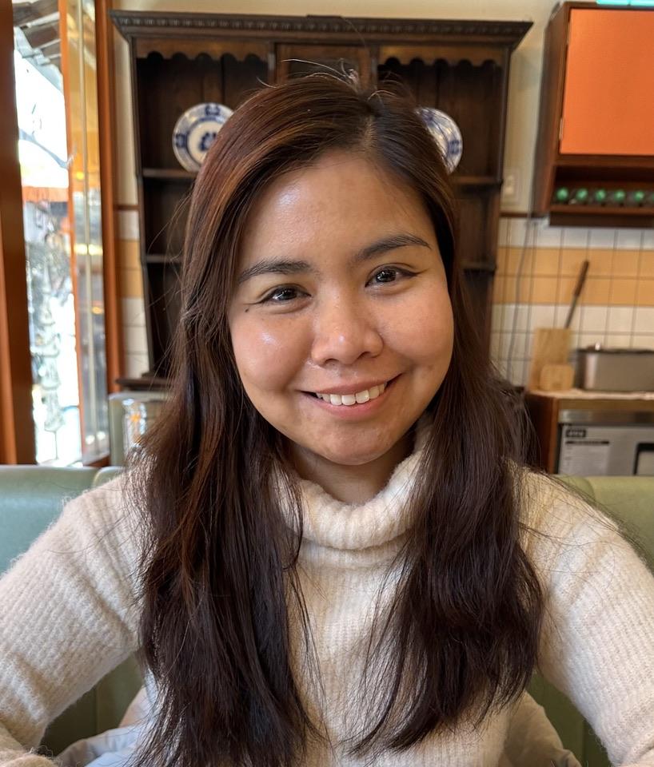
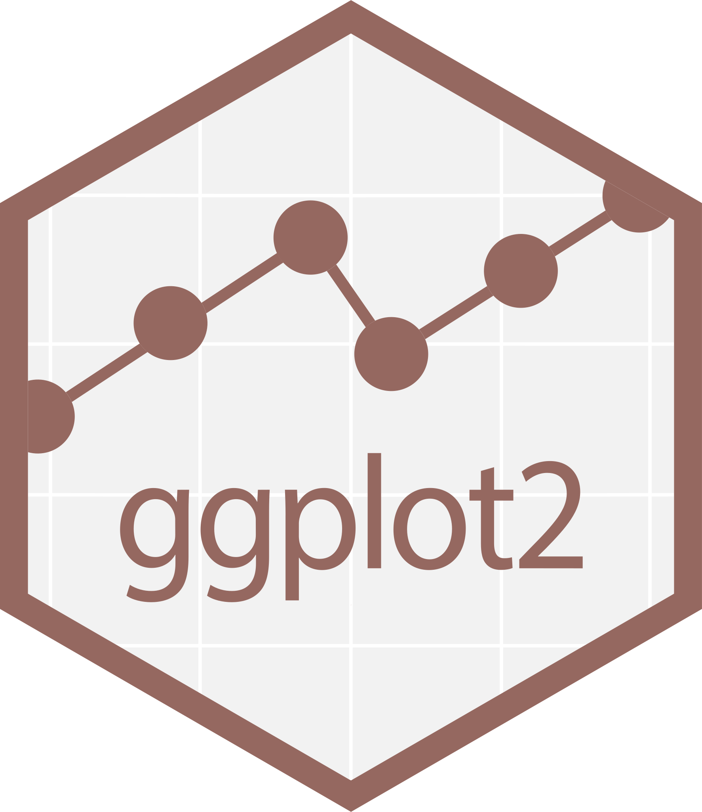
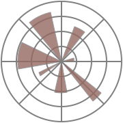
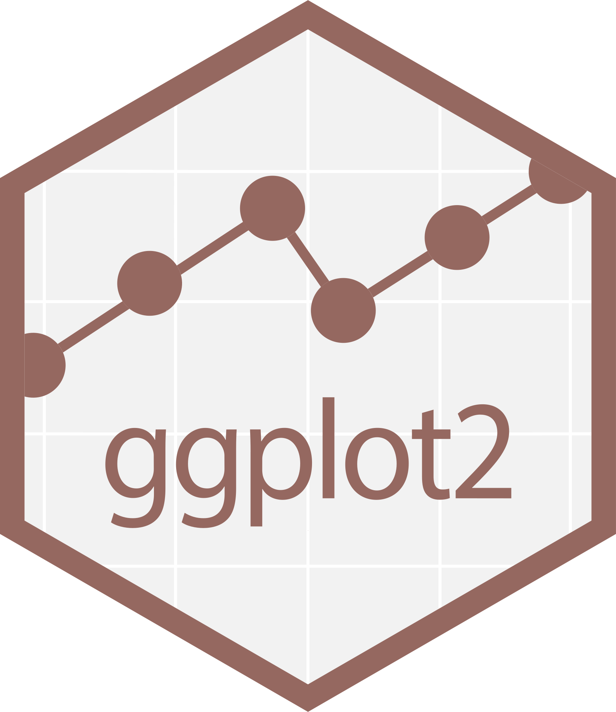
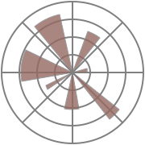
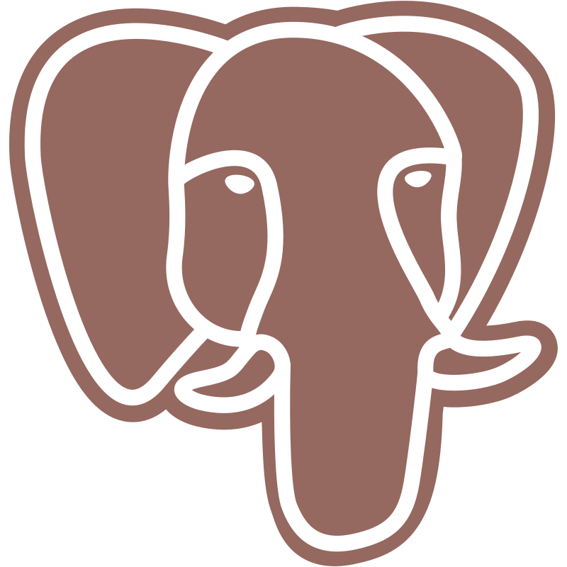

Hello, world!

I'm Kath, a data consultant with over 10 years experience in the analytics field. I have held different titles in the past - Data Analyst, Data Scientist, Data Visualization Engineer to name some. I enjoy crunching numbers, finding trends and patterns in data, turning raw insights into actionable insights, and presenting these using data storytelling principles. One skill that sets me apart is I combine UI/UX principles to data visualization and data storytelling to make user-centric analyses. Apart from data analysis, I enjoy automating workflows and data pipelines.
I'm also currently enrolled in City St. George's, University of London under the program MSc Human-Computer Interaction Design.
Skills
Data Analysis, Statistical Analysis, Machine Learning
Data Visualization

 
Data Engineering

Frontend